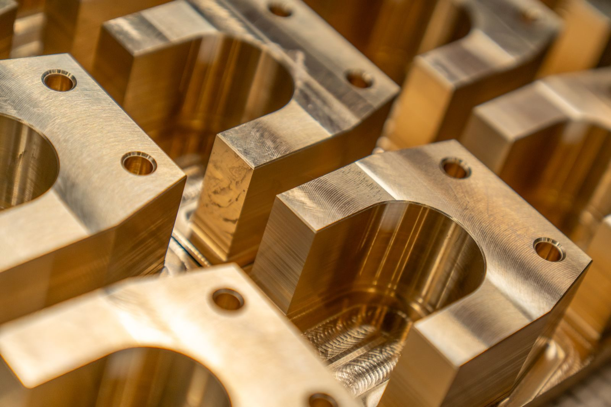
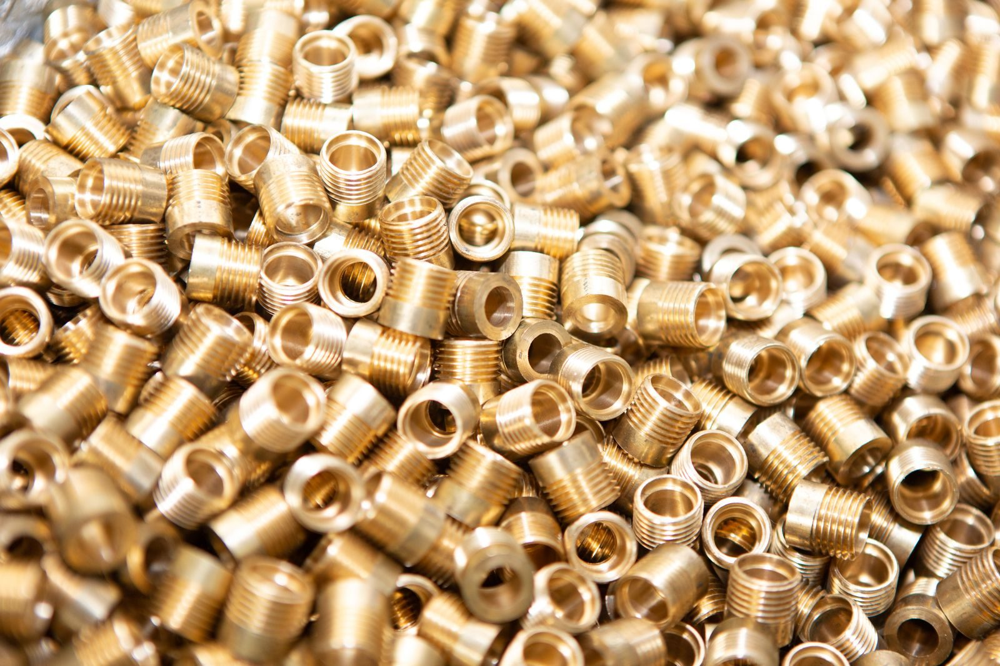
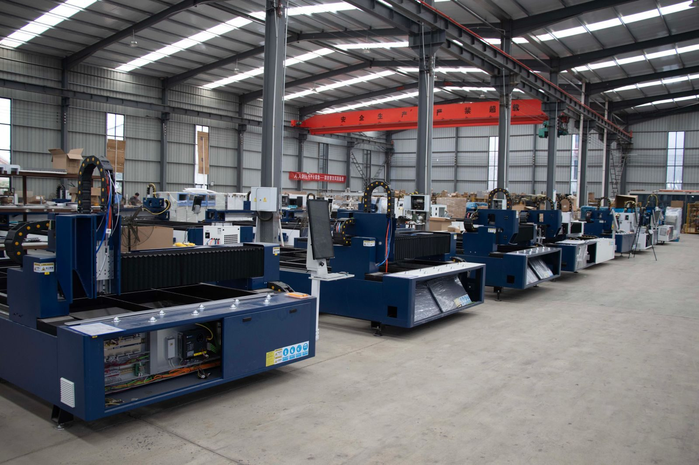

A prototype proves function, not manufacturability
A prototype has one job: to show that the design works. It is usually made in small numbers, often from whatever material was quick to get, and made by whatever route was fastest rather than cheapest at volume. It is entirely normal for a prototype to be produced by a process that would be uneconomic at any real quantity.
The mistake is to read a successful prototype as a validated production design. The prototype answers questions about geometry, fit and function. It has not yet answered the questions that decide cost at volume: how the part will actually be made in quantity, how tight the tolerances need to be, and what happens to them when the process changes.

The process route changes, so the tolerance changes
Machining is the usual route for prototypes because it has no tooling cost and no minimum quantity. At volume the route may become casting, forging, moulding or a different machining strategy - and the new process holds different tolerances. A dimension that was comfortably achieved on a machined prototype can be marginal on a casting.
That means the tolerance scheme has to be revisited rather than copied. The useful question is not 'what did the prototype hold?' but 'what does this dimension need to be for the part to work?' Tolerances written to what a process happened to deliver are the ones that cause a redesign after tooling has been cut.
Material substitution and what it changes
Prototypes are frequently made in a free-machining grade because it cuts quickly and looks good. Production often wants a different grade - one that is weldable, corrosion resistant, or cheaper in the volume required. Changing grade changes machining behaviour, finish, dimensional stability and sometimes the corrosion life of the finished part.
Where the material changes between prototype and production, a functional test on the production material is worth the cost. A part that passed on prototype material has validated a geometry; it has not validated the material that will actually ship.

Design changes that only pay off in volume
Volume unlocks changes that make no sense for one part. A machining operation that is slow can be replaced by a purpose-built fixture. A feature that requires a second setup can be designed out. A wall can be thickened where it costs nothing and thinned where it saves material, once there is a process to thin it consistently.
These changes should be made before the production process is fixed, not after. Once tooling exists, the redesign has a price attached to it, and the value of the saving has to exceed the cost of the change. Getting the geometry right at the prototype-to-production boundary is the cheapest moment in the whole project.
Inspection changes scale too
On a prototype, every dimension can be measured, because there is time. At volume that stops being practical, and inspection shifts from measuring everything to measuring what matters, on a sampling plan, with the process held in control between checks. The dimension that was convenient to measure on a prototype is not necessarily the dimension worth measuring in production.
That is why the critical dimensions should be identified on the drawing rather than left implicit. A first-article inspection plan built on a drawing that distinguishes functional from non-functional callouts is a short document; one built by measuring everything is a project in itself.

What to settle before committing to tooling
Four things are worth settling before a production process is locked: the quantity that will actually be ordered, the material that will actually be used, the dimensions that actually matter, and the process that will make the part. Everything else - finishes, packaging, inspection frequency - can be adjusted later without cutting new tooling.
The most common and most expensive omission is quantity. A process chosen for a volume that never arrives is a permanent cost, and the honest version of the business case uses the demand on the order book rather than the demand in the plan.
References
The tolerance conventions that should carry from prototype to production are the published ones rather than whatever a process happened to deliver: engineering tolerance practice for the callouts and geometric dimensioning and tolerancing for the datums. Material and test nomenclature comes from ASTM International.
Frequently asked
Can I use my prototype drawing for production?
Often not unchanged. A prototype drawing reflects a process chosen for speed at low volume, and the tolerances on it may reflect what that process delivered rather than what the part needs. Review the tolerance scheme and the material before production is committed, and keep only the callouts the function justifies.
When should a cast or moulded part replace a machined one?
When volume justifies the tooling and the geometry suits the process. Casting and moulding shift cost from per-part to upfront, which only pays above a volume that depends on part size, tool complexity and material. That crossover should be priced for the actual part rather than assumed from a rule of thumb.
What is most often missed between prototype and production?
Quantity. A process chosen for a volume that never materialises is a sunk cost, and designs are frequently optimised for a demand forecast rather than the orders in hand. Settle the realistic volume, the material, the critical dimensions and the process before tooling is cut.